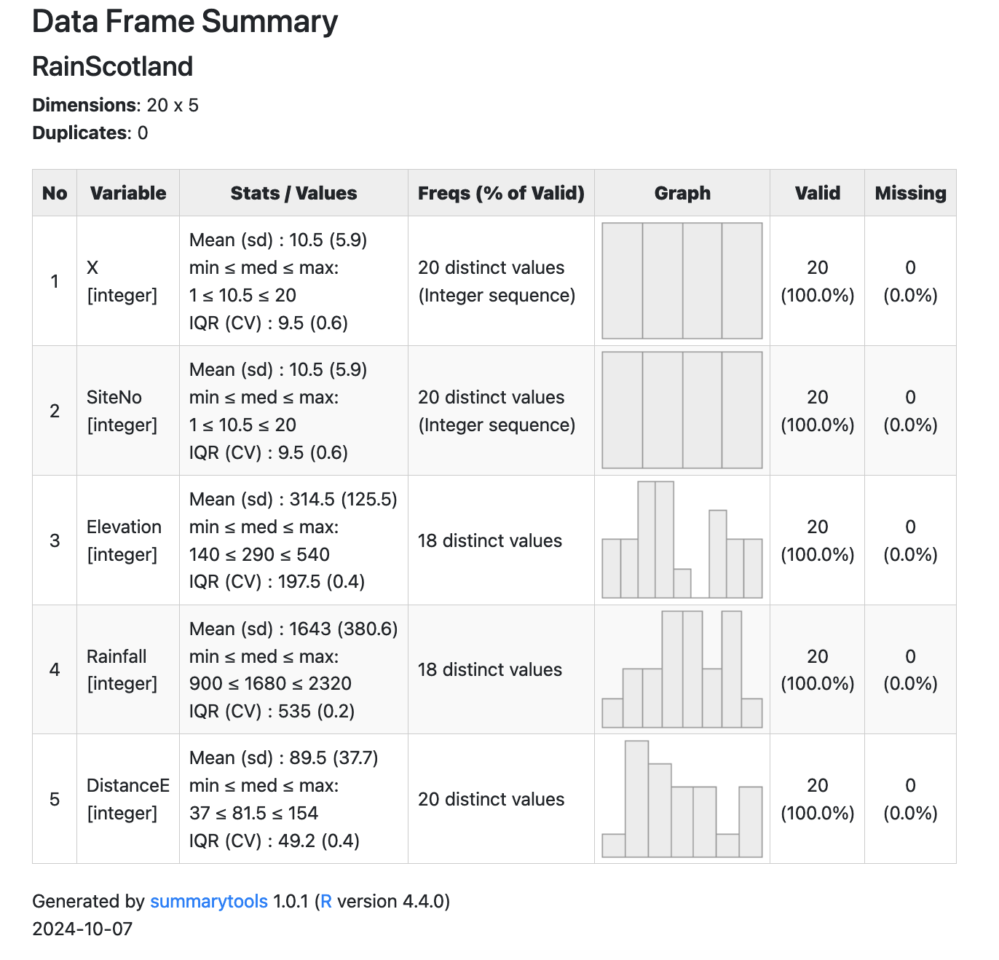
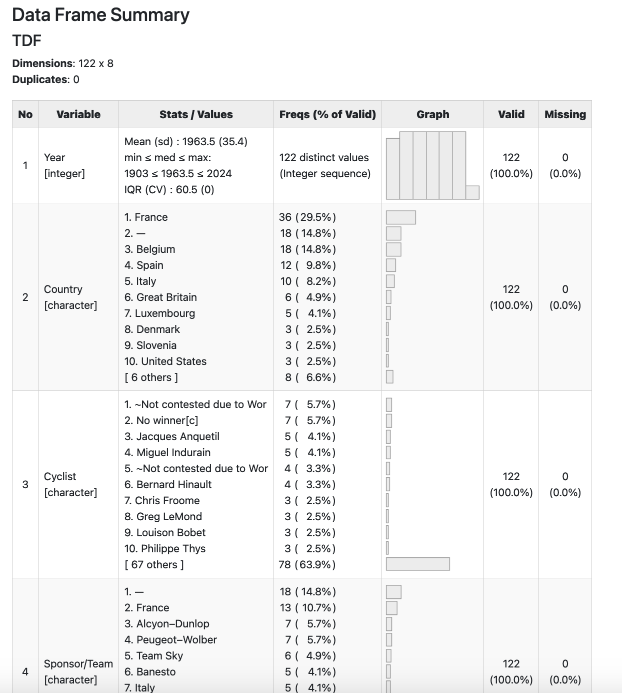

RainScotland<-read.csv("data/Ferguson/RainScotland.csv")
summarytools::dfSummary(RainScotland)
#> Error in `loadNamespace()`:
#> ! there is no package called 'summarytools'33 Summary tables
You often find yourself willing to output a summary table in a way others can easily look at it with some visual comfort or for publication.
This applies to descriptive statistics or the output of models.
There are no standard way of doing this in R, but many packages to do so. I suppose a decade ago most Latex users will tend to use stargazer as a way to get a tex base to be included somewhere else. Now, especially givent the take off or markdown style reporting and integration of notebooks and R (just like in R Studio), the choice is more open.
Here is an example of using summarytools and modelsummary to quickly describe an entire dataset. We invite you to look into these packages for fine tuning, but also to be very careful of the output. No matter how easy the outcome is to be produced you always need to think of the relevance of any metric or graph produced over an entire table.
33.1 Descriptive statistics with summarytools
Take the RainScotland dataset as a first example and use the dfSummary() function that provides a rather comprehensive set of statistics for entire dataframes:
An nice feature is that it can generate its own view (beware: view not View(), as an html file for display in any browser:
summarytools::view(summarytools::dfSummary(RainScotland), file = "output/RainScotland.html")
If we would a more complex dataset (including factors) such as the wikipedia table of the Tour de France winners, we would have:
TDF<-readRDS("data/TourDeFrance/LeTour_df.rds")
summarytools::dfSummary(TDF)
#> Error in `loadNamespace()`:
#> ! there is no package called 'summarytools'summarytools::view(summarytools::dfSummary(TDF), file = "output/LeTour.html")
A less visual but even more complete set (including range and indicators of the shape of the distributions) can be obtained with the descr()function.
summarytools::descr(RainScotland)
#> Error in `loadNamespace()`:
#> ! there is no package called 'summarytools'In the case we apply it to the Tour de France, only the year is available as a numeric, which is not quite interesting because there is only one Tour per year, thus providing basically no useful information.
summarytools::descr(TDF)
#> Error in `loadNamespace()`:
#> ! there is no package called 'summarytools'The specific function freq() is rather to be used here. Given most variables are categorical, we are interested in counts and percentages:
summarytools::freq(TDF)
#> Error in `loadNamespace()`:
#> ! there is no package called 'summarytools'But here again we need to be careful. For example the distance variable is coded as a character, and its reporting with frequencies is thus quite stupid.
There is nothing automatic, you still need to think about, transform or subset your data.
33.2 Descriptive statistics with modelsummary
to be done